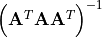

scifysim.correctors module¶
- class scifysim.correctors.corrector(config, lambs)[source]¶
Bases:
object- __dict__ = mappingproxy({'__module__': 'scifysim.correctors', '__init__': <function corrector.__init__>, 'get_phasor': <function corrector.get_phasor>, 'get_phasor_s': <function corrector.get_phasor_s>, 'get_phasor_from_params': <function corrector.get_phasor_from_params>, 'theoretical_phase': <function corrector.theoretical_phase>, 'solve_air': <function corrector.solve_air>, 'tune_static': <function corrector.tune_static>, 'tune_static_shape': <function corrector.tune_static_shape>, 'plot_tuning': <function corrector.plot_tuning>, '__dict__': <attribute '__dict__' of 'corrector' objects>, '__weakref__': <attribute '__weakref__' of 'corrector' objects>, '__doc__': None, '__annotations__': {}})¶
- __init__(config, lambs)[source]¶
A module that provides beam adjustments for the input. It contains amplitude a, geometric piston b and ZnSe piston substitution c. Note that the ZnSe length replaces some air length.
Parameters:
config: A parsed config file
lambs : The wavelength channels to consider [m] (At the __init__ stage, it is only used for the computation of a mean refractive index for the dispersive material)
Internal parameters:
a : Vector of the amplitude term
b : Vetor of the geometric piston term [m]
c : Vetor of the dispersive piston term [m]
- __module__ = 'scifysim.correctors'¶
- __weakref__¶
list of weak references to the object (if defined)
- get_phasor(lambs)[source]¶
Returns the complex phasor corresponding to the current a, b, c, and dcomp phasors.
Parameters:
lambs : The wavelength channels to consider [m]
Returns: alpha
- get_phasor_from_params(lambs, a=None, b=None, c=None, dcomp=None)[source]¶
Similar to get_phasor() but allows to provide the parameters as arguments (slower).
Returns the complex phasor corresponding to the current a, b, c, and dcomp phasors.
Parameters:
lambs : The wavelength channels to consider [m]
a : Vector of the amplitude term
b : Vetor of the geometric piston term [m]
c : Vetor of the dispersive piston term [m]
- solve_air(lambs, wet_atmo)[source]¶
Computes a least squares compensation model (see Koresko et al. 2003 DOI: 10.1117/12.458032)
Parameters:
lambs : The wavelength channels to consider [m]
wet_atmo : The wet atmosphere model (see n_air.wet_atmo object)
Returns: 
- theoretical_phase(lambs, proj_opds, wet_atmo)[source]¶
Computes the theoretical chromatic phase effect of the array geometry projected on axis based on the wet atmosphere model.
Parameters:
lambs : The wavelength channels to consider [m]
proj_opds : The projected piston obtained by projection (Get from simulator.obs.get_projected_geometric_pistons)
wet_atmo : The wet atmosphere model (see n_air.wet_atmo object)
Returns: phase
- tune_static(lambs, combiner, apply=True, freeze_params=['b0', 'c0', 'b2', 'c2'])[source]¶
Optimize the compensator to correct chromatism in the model of the combiner. Returns a lmfit solution object. If “apply” is set to True, a, b, c, and dcomp are also set to the best fit value.
Parameters:
lambs : The wavelength channels to consider [m]
combiner : A combiner object (chromatic)
apply : Boolean deciding whether to set the local parameters to best fit value (default: True)
freeze_params : The name of parameters to be freezed. Should be used to account for the larger than necessary number of degrees of freedom.
Note:
For obtaining a more practical direct results, some more complicated balancing guidelines should be followed.
- tune_static_shape(lambs, combiner, apply=True, sync_params=[('b3', 'b2', 0.0), ('c3', 'c2', 0.0)], freeze_params=['b0', 'c0', 'b1', 'c1'])[source]¶
Optimize the compensator to correct chromatism in the model of the combiner to obtain enantomporph combinations at the outputs. Returns a lmfit solution object. If
applyis set to True, a, b, c, and dcomp are also set to the best fit value.Currently only works for double Bracewell 3-4 architectures.
Parameters:
lambs : The wavelength channels to consider [m]
combiner : A combiner object (chromatic)
apply : Boolean deciding whether to set the local parameters to best fit value (default: True)
Note:
For obtaining a more practical direct results, some more complicated balancing guidelines should be followed.
Example:
sol = asim.corrector.tune_static_shape(asim.lambda_science_range, asim.combiner, sync_params=[("b3", "b2", asim.corrector.b[3] - asim.corrector.b[2]), ("c3", "c2", asim.corrector.c[3] - asim.corrector.c[2])], apply=True)
- scifysim.correctors.extract_corrector_params(corrector, params)[source]¶
Utility function to reconstruct the b and c vectors from the lmfit Parameters object.
Parameters:
corrector : The corrector object
params : at lmfit Parameters object containing b_i and c_i terms
- scifysim.correctors.get_Is(params, combiner, corrector, lambs)[source]¶
Returns intensities at the combiners’ outputs taking into account the corrections provided in params.
dcomp is computed automatically be default.
Parameters:
params : either
A Parameters object from the optimization
A tuple of vectors bvec, cvec
combiner : A combiner object.
corrector : The corrector object
lambs : The wavelengths considered.
- scifysim.correctors.get_contrast_res(params, combiner, corrector, lambs)[source]¶
Macro that gets the a residual from parameters for minimizing method.
- scifysim.correctors.get_depth(combiner, Is)[source]¶
Computes a “null depth” analogue (dark/bright) to be minimized by the tuning method. The masks in the combiner definition are used to determine the role of the different outputs.
Parameters:
combiner : A combiner object.
Is : An array of intensities
- scifysim.correctors.get_es(params, combiner, corrector, lambs)[source]¶
Returns the enantiomorph excursion taking into account the corrections provided in params.
Currently works only for double-bracewell 3-4 architecures
dcomp is computed automatically by default.
Parameters:
- paramseither
A Parameters object from the optimization
A tuple of vectors bvec, cvec
combiner : A combiner object.
corrector : The corrector object
lambs : The wavelengths considered.